要完成本章节的实验，大概需要20分钟。
如果在我们的文字描述和截图中均未涉及的选项或者页面，取默认值即可。
本实验演示配置数据流管道（为Lab2/3准备），并实时对流数据进行在线分析等。
KFH（Kinesis Data Firehose）是提供实时交付的完全托管服务，可以把流数据发往诸如 Amazon Simple Storage Service （Amazon S3)， Amazon Redshift， Amazon Elasticsearch Service （Amazon ES)、Splunk以及支持的第三方服务提供商（包括DatAdog、MongoDB和NewRelic）拥有的任何自定义HTTP端点或HTTP端点。
打开Kinesis管理控制台（确保当前的区域选择是新加坡），在左侧菜单栏选择传输流，在界面上点击“创建传输流” 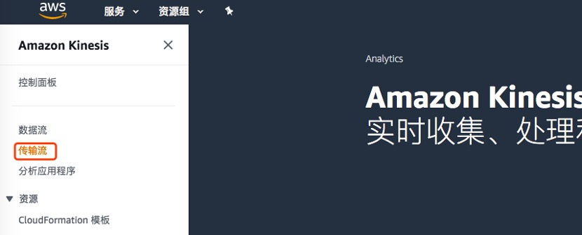
输入传输流的名字（此处为 lab1-kfh），并选择准备过程中创建的Kinesis数据流（此处为kds-lab1），然后点击下一步
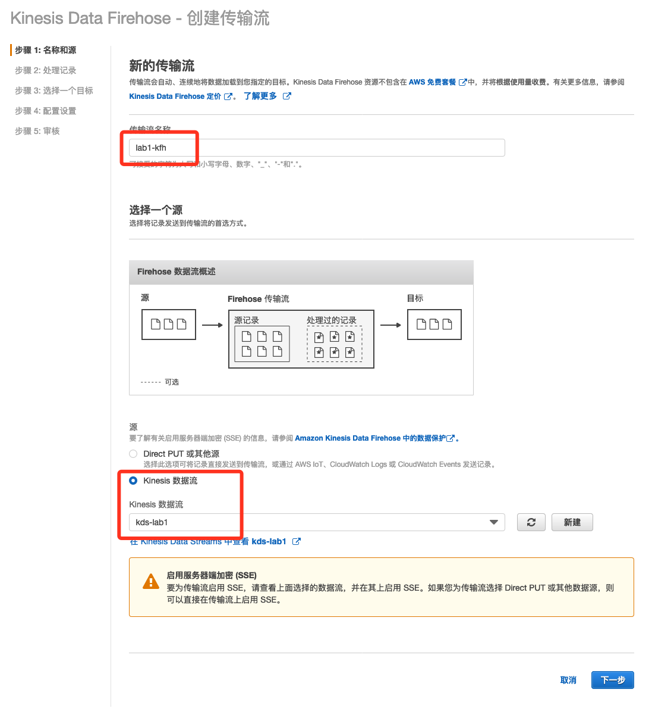
第二步处理记录选择默认，第三步目标我们选择S3，并选择之前创建的存储桶（此处为：lab-519201465192-sin-com）
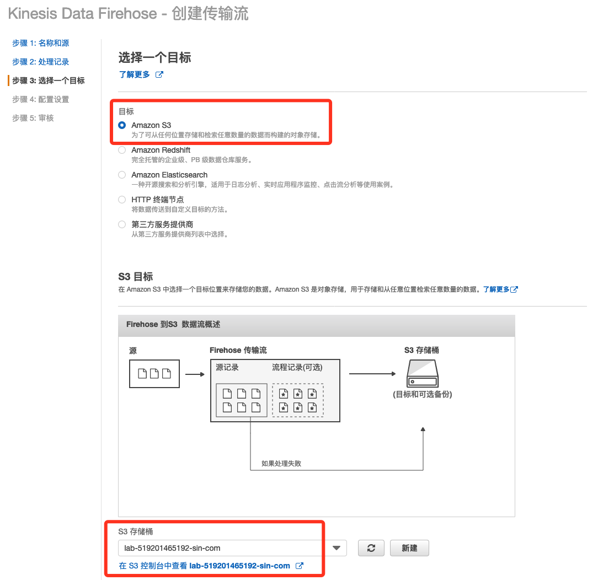
然后在S3前缀和后缀分配输入名字lab1-input/和lab1-error/，如下
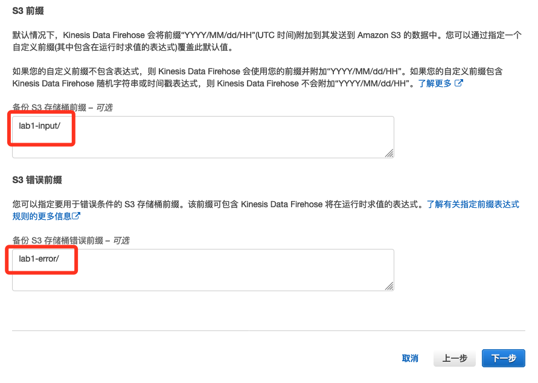
配置缓冲的时候，设置为“1”M和“60”秒，其他默认，点击下一步，然后审核并点击“创建传送流” 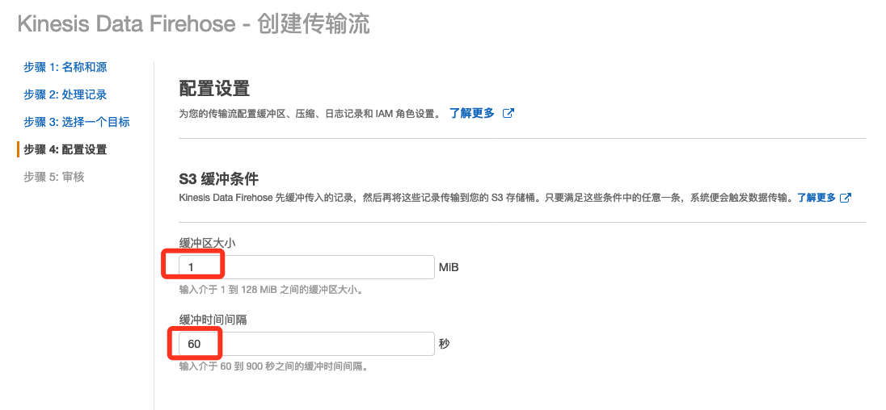
大概过1分钟左右，就可以在S3存储桶里面看到对应的数据输出。
打开Kinesis管理控制台（确保当前的区域选择是新加坡），在左侧菜单栏选择“分析应用程序”，在界面上点击“创建应用程序”，然后输入名字（此处为kas-lab1）和运行时（SQL）即可
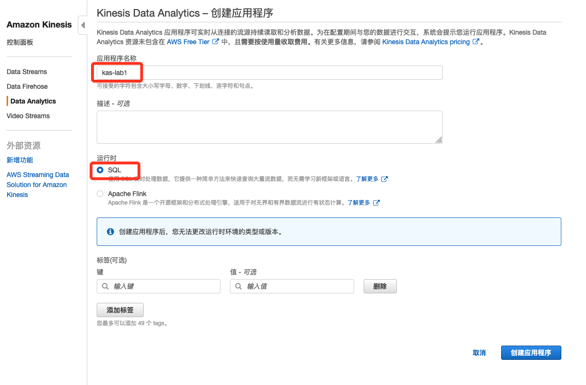
创建成功后，选择连接数据流（连接到之前准备阶段创建的kds数据流，此处为kds-lab1，已经通过脚本在送数据了）
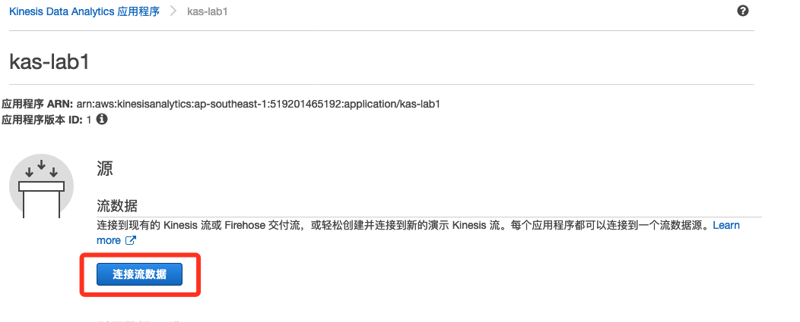
然后点击左下角的发现架构，开始获取元数据 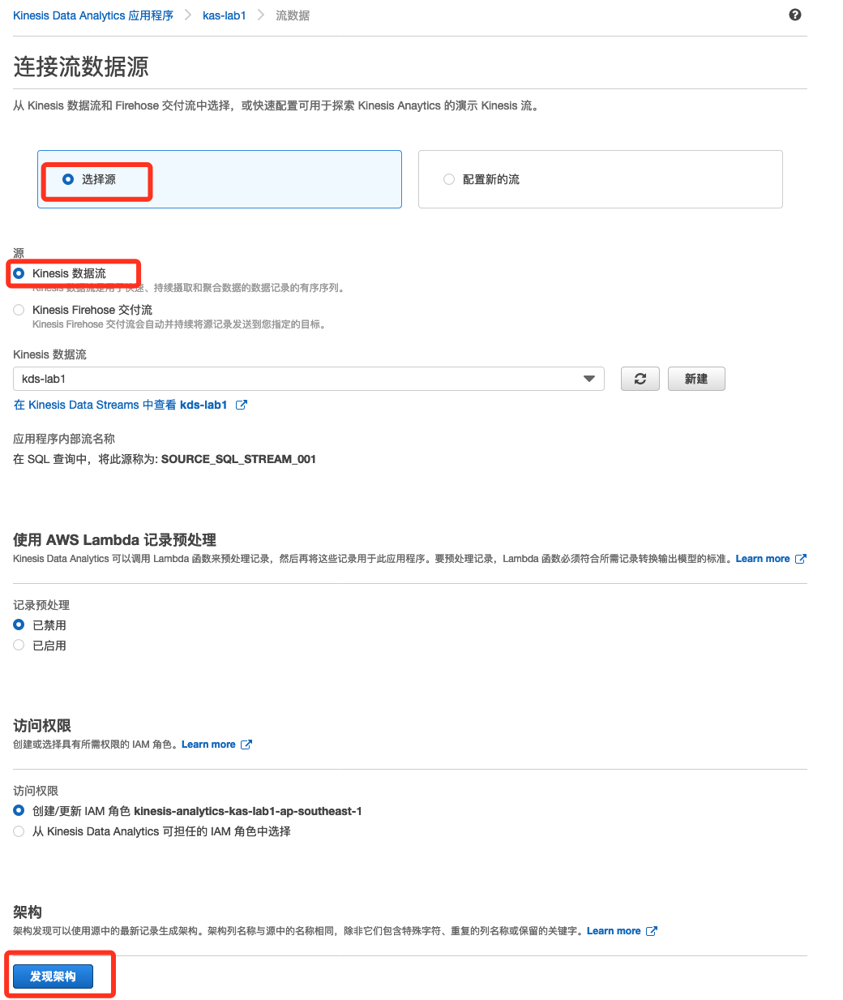
发现后的架构和数据格式跟我们预期的一致，所以此处不做更改，直接保存即可 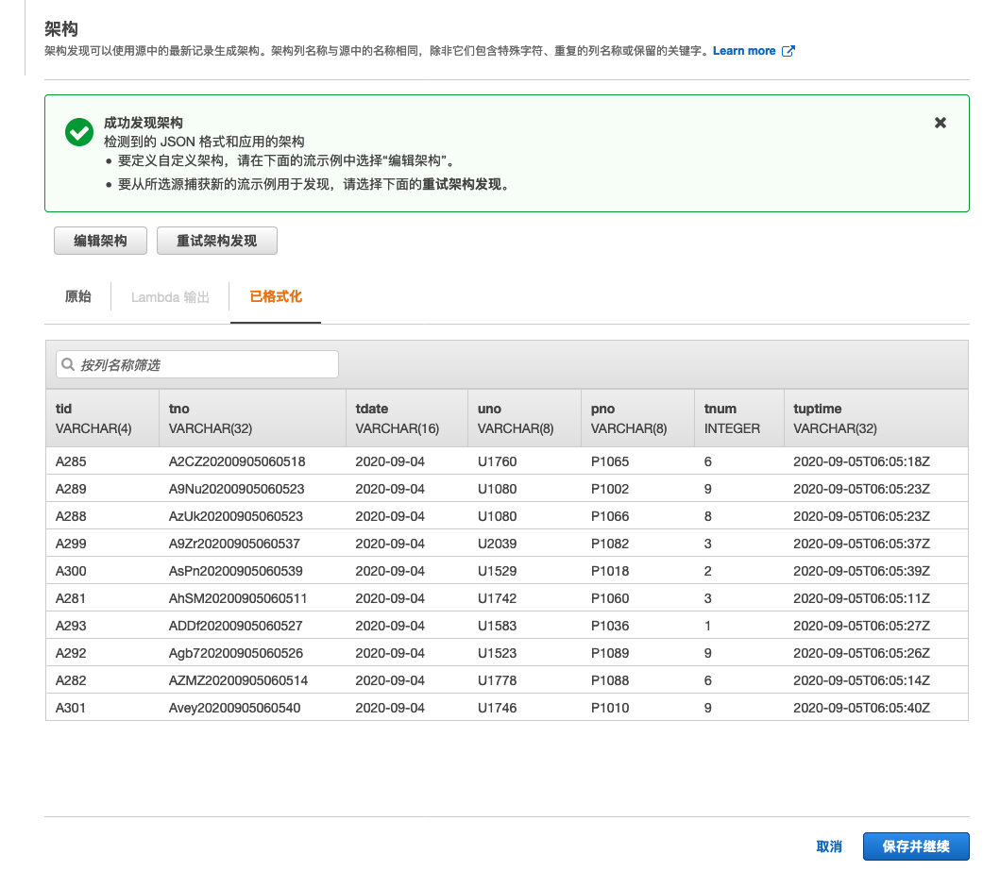
接下来我们选择用SQL做实时分析 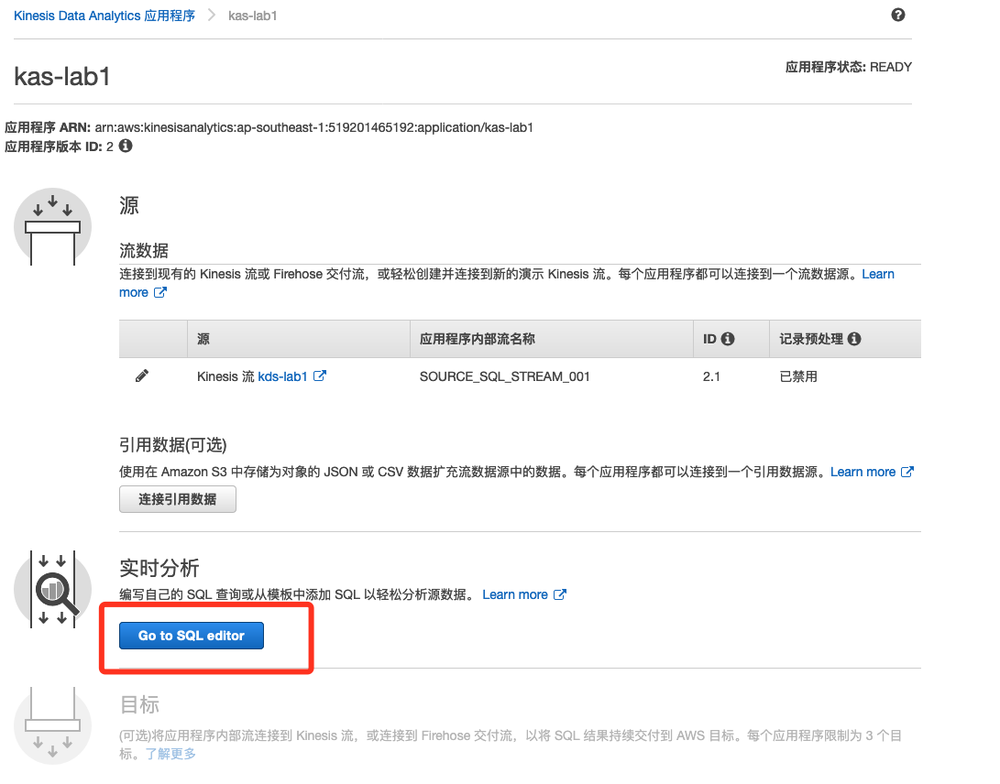
确认启动它 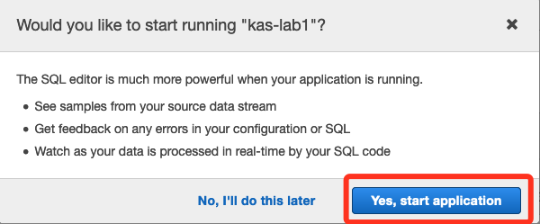
然后使用如下SQL代码，保存并运行（我们此处演示按1分钟聚合，如果有其他聚合时间要求，可以修改最下面的60这个数字即可）
CREATE OR REPLACE STREAM "DESTINATION_SQL_STREAM" (count_tno integer,sum_tnum integer);
CREATE OR REPLACE PUMP "STREAM_PUMP" AS INSERT INTO "DESTINATION_SQL_STREAM"
SELECT STREAM count(*), sum("tnum")
FROM "SOURCE_SQL_STREAM_001"
GROUP BY FLOOR(("SOURCE_SQL_STREAM_001".ROWTIME - TIMESTAMP '1970-01-01 00:00:00') SECOND / 60 TO SECOND);
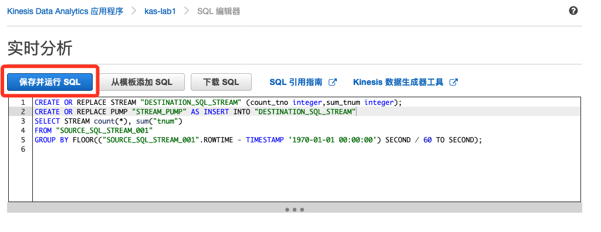
略微等待一小段时间，我们即可看到运行结果，如下所示（和我们的代码预期一致，一分钟一次聚合） 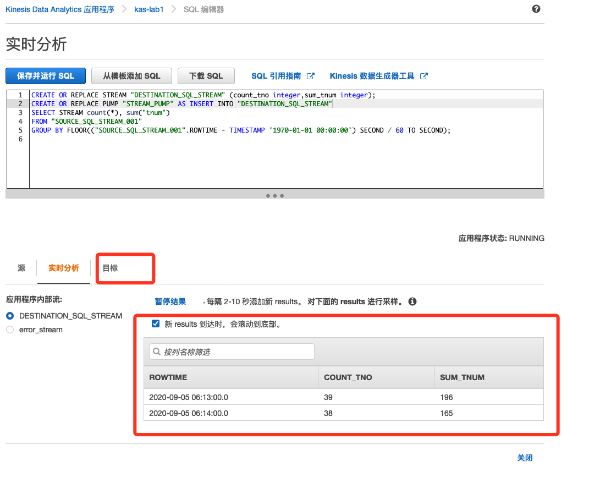
可以在目标页面把查询结果输出到别的地方，例如别的流，别的S3存储桶等用于业务用途，此处不做演示。
恭喜你，已经完成第一个关于流数据处理的动手实验（Lab1）。